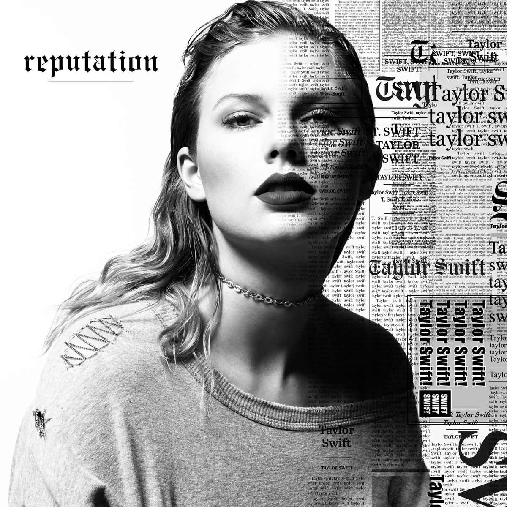

This project was created for my second semester game design course. The purpose of the project was to learn how to use unity in 3D. We also had to learn how to use Blender for this project. The player has to help their cat boss serve spirits that are stuck in Limbo, the place between the living and the dead. It is said that those stuck in Limbo are still holding onto something from their past life. By doing tarot readings on the spirits, you are able to find out what they need to move on. Complete small minigames to brew up their cure.

The first of the minigames I coded is the potion station.
The design of the potion station was meant to emulate rhythm and flash cooking games. The player needs to fill up the potion bar with the correct ingredients (cooking game) and then mix it fast enough to make a succesful potion. We originally wanted the mixing to be more dynamic by needing to sync the movements with sound or having to move the cursor clockwise and anti-clockwise to stir. We decided to simplify it to arrows as it created the feeling of mixing without taking too much in-game time.
The factor of time is important as the player will need to serve increasingly difficult amounts of customers a day. The other methods just became too frustrating from a player point of view.
I also created all of the tarot card designs for the game.
There are 3 types of tarot cards; cause of death, what they seek, and the reason why. These 3 cards come together to tell a story about the spirit seeking your help. I had to come up with minature narratives about each customer and how this relates to the potions, runes and crystals of the game. There had to be a balance between realism and comedy. The cards couldn't be too dark as it could potentially be triggering to audiences. It is intended that the cards are light-hearted without poking fun at death.
The designs for these cards were very intentional as the images had to communicate a lot of lore without much text. A cat is featured in each card to tie the tarot in with the rest of the game world.
For this assignment we each had to create some 3d assets. I made the cauldron, all the plants as well as the dream catcher in the bedroom.
All models were fully sculpted, uv-unwrapped and textured in Blender.